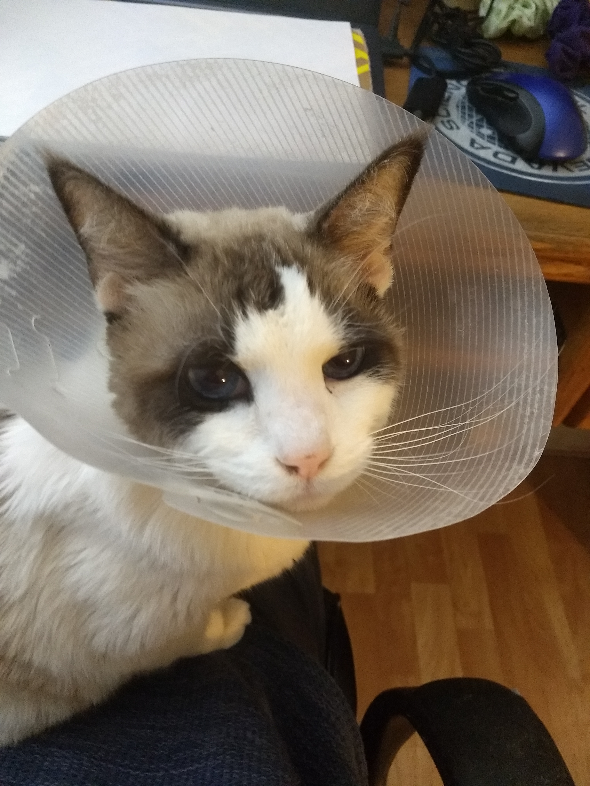
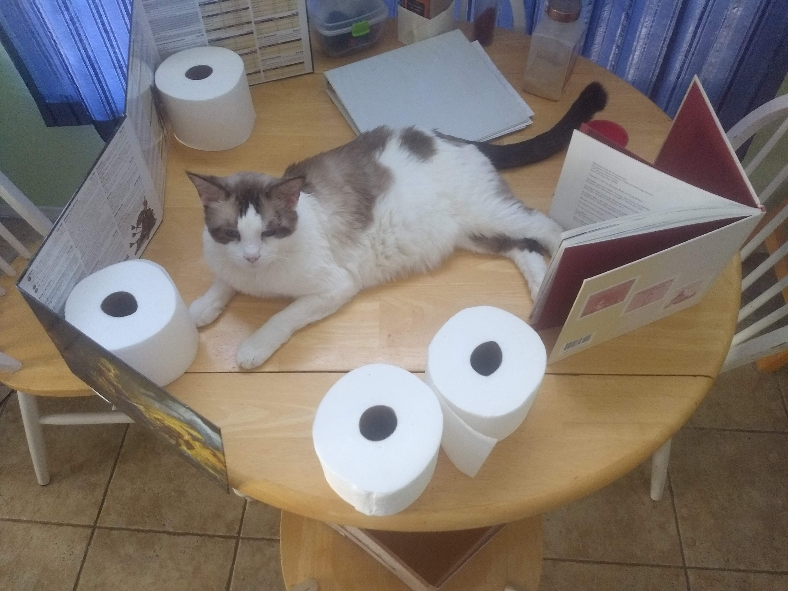

My name is Alex, I'm 19, and I never learned how to use the command line. I like cats, board games, and positive energy. I like to eat, eat, eat, apples and bananas. Now I have started a new line in the html file without creating a new paragraph. I wonder what that does? I skipped a line before starting this line. Does this have an effect?
I closed the old p tag and started a new one. What does that do?
my cat is named Neo
 I like WEBTOONs.